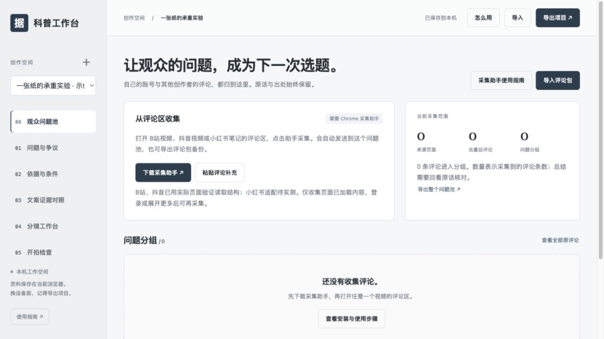
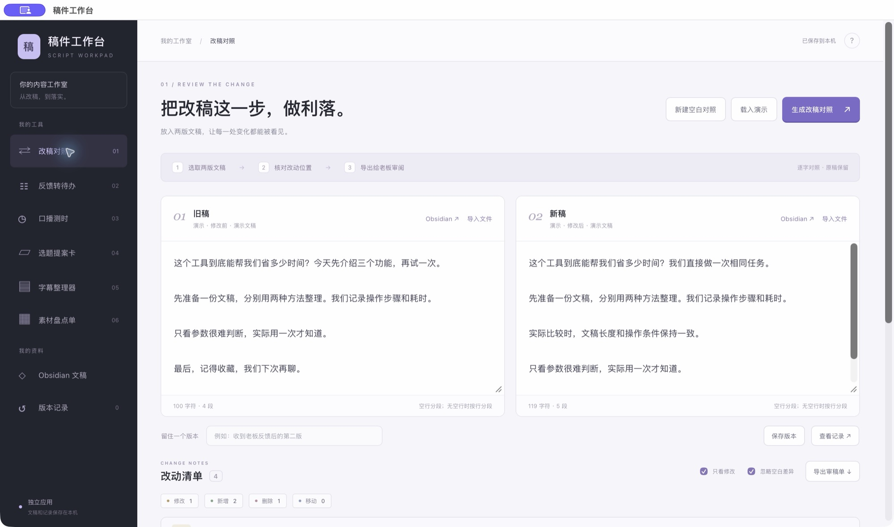
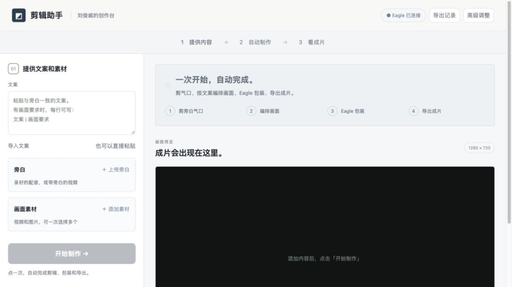
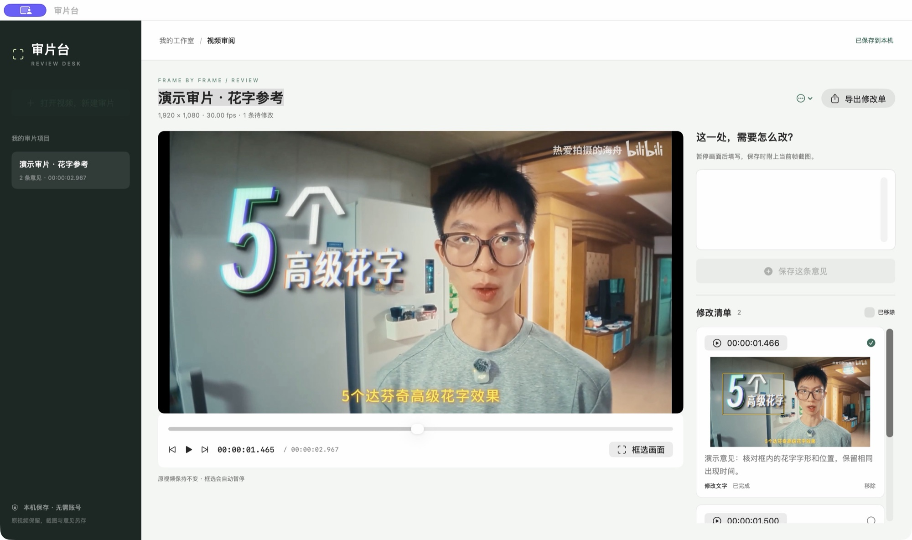
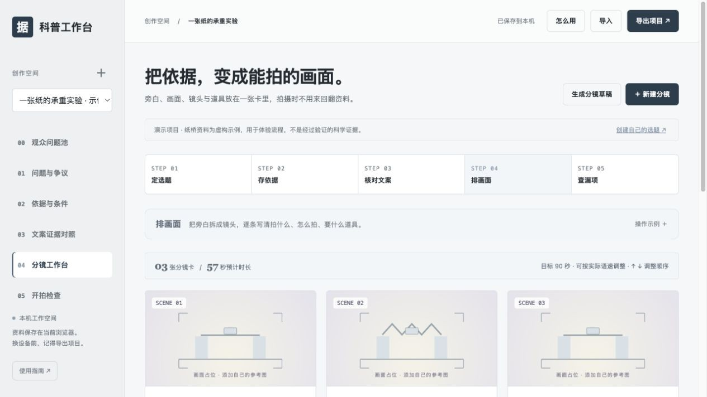

AI 整理后，再与团队人工筛选、推进制作。
你好，我是刘俊威。一名 IP 编导。
把好奇，做成内容。把想法，做成工具。
约 1 年半内容制作经历，曾在英俊姐妹日记和毕导团队工作。
以选题、脚本为主，参与剪辑，也用 AI 提高团队工作效率。
让想法，重新组合。
两段 IP 团队经历。
同一件事：把内容讲明白。
我的 AI
好用的 AI，
要用进工作里。
我会使用 GPT、Claude 和 Codex，
帮助自己和团队提高工作效率。
GPTClaudeCodexHeyGen Avatar数字分身Fish Audio声音克隆
配合任务使用，最终判断由我完成。

从评论里找问题，由我决定拍什么。
用「科普工作台」整理已采集的观众评论，合并重复提问、归类高频问题。我回看原话，从每轮 3—5 个候选中选出适合账号、具备拍摄条件的题；「选题雷达」补充热点线索。
例如《新买的苹果电脑不会用？这几个小技巧要马住！》，抖音 1.09 万赞、550 次收藏。
同类评论初筛约 2 小时 → 约 1 小时（个人工作估算）。

整理反馈、对照改稿，保留我的判断。
使用 GPT、Claude 辅助整理资料和推敲表达，再用「稿件工作台」把反馈拆成待办，对照两版增删、试读核对口播时长。
- 改结构：开头铺垫过长时，先展示产品效果，再补必要背景；口播讲操作，画面就给对应演示。
- 核事实：科普稿对照原资料，检查数字、适用条件，以及“可能”有没有被改成“一定”。
- 留记录：保留版本与修改意见，方便和同事继续沟通。

让工具先剪气口、排素材。
用 Claude 和 Codex 开发「剪辑助手」：放入文案、旁白和素材，用 Whisper 转写旁白、对齐文案，剪气口并粗排素材。
- 工具先做：减少逐段剪停顿、整理素材的重复操作。
- 我再调整：检查信息顺序、镜头节奏、视觉效果与画面包装。
实际应用
英俊的苹果电脑技巧视频：AI 辅助粗剪后，我继续调整视频节奏、视觉效果和包装。
收集参考，再调整成适合内容的包装。
用「拾片」收集参考视频，用 Eagle 找花字、动效与音效；「复刻台」提取参考关键帧，对照调整花字节奏、导出透明背景动效，配合 Remotion 制作视频。
- 选参考：按内容和节奏找相近的画面、花字及音效。
- 做调整：对照关键帧检查字形、位置和出场时间，保留人工校准。
- 进成片：将需要的包装素材放回剪辑流程，再整体审看。

问题记到时间码，逐条改完。
初剪后，在「审片台」逐段回看，记录节奏、口播和画面对不上的位置，附上对应截图，再到剪映修改。
- 看节奏：压缩过长铺垫和重复解释。
- 看画面：关键知识点配上对应实验或操作演示。
- 看表达：复核知识点与口播，避免删剪后改变原意。
人工审片
我负责逐段回看，工具保存时间码、截图与修改清单。
数字分身与克隆音色
为两位博主制作口播数字分身和克隆音色，用于内部测试和正式发布的视频。
HeyGen Avatar
博主来不及出镜时，用数字分身补充坐播片段。
Fish Audio
口播出现个别错误时，只补配说错的句子。
我的工作方法
有看点。
讲清楚。
做得到。
先找到观众想问的问题。
数码内容从使用场景切入，科普内容从一个具体疑问切入。一条视频，先明确最想回答什么。
让开头的吸引力，贯穿到结尾。
先给现象或效果，再补必要背景。压缩重复铺垫，口播讲到操作，画面就给出对应演示。
表达可以通俗，依据不能含糊。
核对原理、数据和适用条件，资料有分歧就标注待确认。把专业内容讲简单，也保留它的准确性。
创作小工具
把重复的事，
交给顺手的工具。
用 Claude 和 Codex，把工作中遇到的需求做成小工具。

选题与脚本
科普工作台 ↗
问题池 → 资料依据 → 文案 → 分镜。
把分散的信息放进同一条工作流。
粗剪与包装 · Mac 本机工具
剪辑助手 ↗
裁气口、排素材，再由我调整节奏和包装。
点开查看流程与本机使用说明。